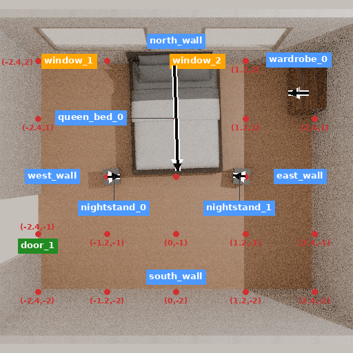
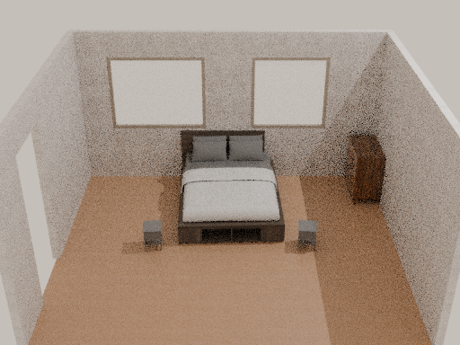

记录日期：2026-11-10T16:51:30.514748+00:00。目录沿用11月10日命名；v2实际推理跨入11月11日。原始默认任务：A bedroom with a bed, two nightstands, and a wardrobe in the corner of the room.。这是单一接入样例，不是新测试集或论文效果比较。
已交付真实四件家具的部分卧室、五视角、可冷读取GLB和全部执行证据。原生整场流程在固定模型服务时限结束，墙饰未完成、天花和小物件未运行。不能写成完整生成成功，也不能把接通工具或修复回滚当作新算法。
本轮执行器是Scene-Designer调度＋SceneSmith原生工具，使用本地RPC适配、512像素俯视/512×384侧视和两种本地默认材质。并非原论文完整配置复现；本地权重同时承担策略与工具VLM，资产检索使用真正的官方CLIP。
| 项目 | 结果 |
|---|---|
| 有效v2续跑 | 23次真实前向：19次策略＋4次工具VLM；4553输出token；35次原生工具尝试；8次新CLIP查询 |
| 时间 | 续跑主体959.246秒；模型前向体合计266.612秒，不含装载、预处理和服务工具。900秒服务时限导致退出124，尚未耗尽32次或16384输出token上限；未重启挑结果。 |
| 费用与训练 | 付费API0、训练更新0。本地推理消耗已开实例，不能说总运行零成本。 |
| 前置成本 | 初始已记录1次/141输出token另计；失效v1的15次/2379输出token保留为工程调试成本，不当质量样本。 |
| 配置与资源边界 | 同一个冻结8B本地模型；V10032GB、容器25GiB RAM/6CPU。v2实际峰值CUDA分配17.175GiB；本轮没有测完整进程树RAM峰值。 |
户型阶段返回，有一扇门、两扇窗；家具阶段走满10轮后由阶段上限推进，仍有原生检查失败。墙饰一次请求5个候选，只完成1个资产处理且未放置；另外4个因模型服务到时关闭而失败。候选资产是本地可用子集：大件141/5840、墙饰59/2357，不能据此评判完整HSSD或原论文配置。
本地部分场景GLB，43,556,284字节，冷读取17个几何、31个节点。导出进程已写完GLB后以-11退出；进程异常与产物可读分别报告，不能把导出器记成正常通过。重读的GLB内没有外部图片/缓冲URI。


四个必需实例名称都能绑定到网格。衣柜资产实际高约0.838米，类别与使用功能存在疑问；当前只有助手查看图像，没有独立语义验收，不能把4/4名称绑定当作任务成功。北墙与床的约4.6厘米相交仍保留。逐项审阅表。
原生报告3个碰撞物体对。53条原始负距离中有35条涉及地板；29条的几何全部位于地板上方或相切，其中10条却被报告穿透超过1毫米。所有证据使用原坐标、原尺度和实际OBJ顶点。支持分离证明不覆盖北墙等其他接触，旧分数未改，也没有生成新的成功标签。负距离的具体数值算法成因尚未确定。
一次同状态对照只改XML命名空间拼写：509个Mesh变为Convex，53条负距离、3个原生物体对及最大深度全部不变。因此“改前缀就解决穿透”已被本例否定，不能宣传为修复效果。详见命名空间对照、分离证据。
另一项实际源码试验证明：原生缩放会写SDF文件，单纯恢复SceneJSON不能撤销。相同JSON、相同下一次0.9缩放，在受前一个分支污染时文件尺度变为0.455625；从原文件恢复则是0.50625，逻辑对象却都报告0.50625。恢复这一SDF字节后结果一致并可完全撤销。试验调用原生helper的显式registry=None模式；没有验证整个SDK注册表、缓存或随机状态。完整实测。这要求公共分支基线修正，属于普通工程正确性，不是新的Agent收益。
研究对象仍是生成决策能否改善完整场景。实际环境状态必须包括可变资产文件与注册表，不能只写场景JSON。决策D是模型提出的计划；真实执行结果是另一种证据。模型写了“已完成”或SDK返回success，都不替代原始要求验收。
J(θ; ψ₀, B) = E[ 1{原始要求在终态全部被独立验证为真} | 固定共同工具ψ₀、相同总成本B ]
p(D,A | X) = p(D | X) · p(A | X,D) （概率链式法则，不是新算法）
| 对照 | 保留什么 | 要辨别什么 |
|---|---|---|
| A | 同源动作监督，直接行动 | 直接训练是否已够用 |
| AUX | 同样D标签作为辅助监督，动作不读取生成D | 收益是否仅来自更多监督 |
| J | 原生联合think＋action | 不能把已有推理再包装成新机制 |
| P | 先生成自己的D，再据D行动 | 额外计算与依赖结构是否有独立收益 |
| 普通搜索 | 相同工具、资产、观测、上游权限和总预算 | 学习是否超过普通计算 |
目标不是D写得更长、局部布尔项更多，而是同预算下整场要求、几何与保留效果。不同耗时工具使预算成为状态的一部分；额外前向、工具侧VLM、失败尝试、装载和渲染都要计入。未来只更新策略LoRA时，工具侧必须确实关闭该adapter并验证；否则同时改了环境，不能把差异全归给策略。
现有本地24个原始单步目标只有10条原始D、19条原始视图；这些覆盖数据沿用既有台账，不是本轮新增训练集，也不能冒充35K整场正例。当前试跑不自动加入成功示范。没有新训练授权，未运行8B反向或优化器。
重新按Git blob核验训练源码。原生grpo_loss_for_group在局部、全局优势同时为零时，直接返回独立零张量，尚未调用含KL的目标。这一实现的两种常数组和非零全局分支已经CPU执行；只对独立零叶做backward，无模型参数。其他RL目标可能仍有KL或辅助梯度，不能混为一谈。源码执行记录。
源码是在全部组累积梯度后统一step，不能说它逐组改了行为策略；但applied_updates计数器前进本身，也不能证明全零优势时参数有变化。原生GRPO加载两个独立完整模型，仅BF16权重约32.66GiB，已经超过V10032GiB，尚未包含梯度与激活；没有尝试在本机原样训练它。
本轮v2是顺序推理，没有运行GRPO树；资产文件回滚问题由独立探针再现，不能当作v2终止原因。
LoRA一手研究支持检查MLP覆盖和调参，不能据此保证本VLM训练适配。实读checkpoint头：decoder全部线性层rank8约21.82M参数，attention-only约7.67M；加上16.33GiB冻结权重仍未包含多模态激活。没有做训练峰值测试。计算假设与头哈希。
本轮完整读PDF227–230、239–243、248–256页，并检索231–262页标题；前轮读过封面目录和223–226。没有读完312页。书的启发是先分清协议、策略、环境和可靠奖励；图示中“SFT不泛化”与“NaN导致零梯度”不能作为普遍结论。近邻已有CoT、诊断行动、Critic和回滚；在轨蒸馏也已有明确先例。当前没有新损失、新理论或CVPR创新成立的证据。准确阅读范围；完整方法与理论合同。
两次试跑的1607条原始文件路径均保留字节、路径与哈希，分别固实压缩为193,633,176与73,221,696字节，已保存数据盘并冷恢复验证v2。原始ZIP压缩字节不保证可重建；所有成员字节均已校验。大伴随包和GLB保留本地，不塞入Git；公开审阅包含哈希、代码、精简原始轨迹和选定实际视图。
清理了5166个有源码的pyc及闲置CUDA11.8编译器，保留安装元数据和重装地址；另一个已证实冗余的旧297 ZIP此前在本阶段清理。没有删除模型、研究源码或原始实验结果，没有硬链接去重。原CUDA11.8构建若重跑需重装；当前CUDA12.8推理环境未改。
复核308个原始源码输入与271个推理前冻结文件，均一致。原始试跑仍按失败保留；所有拥有的试跑子进程已退出。主研究目标保持未完成，不能用这些准入工作替代完整生成和独立方法收益。
统计CSV · 源码前后核验 · 已运行与冷复核命令 · 轻量证据包